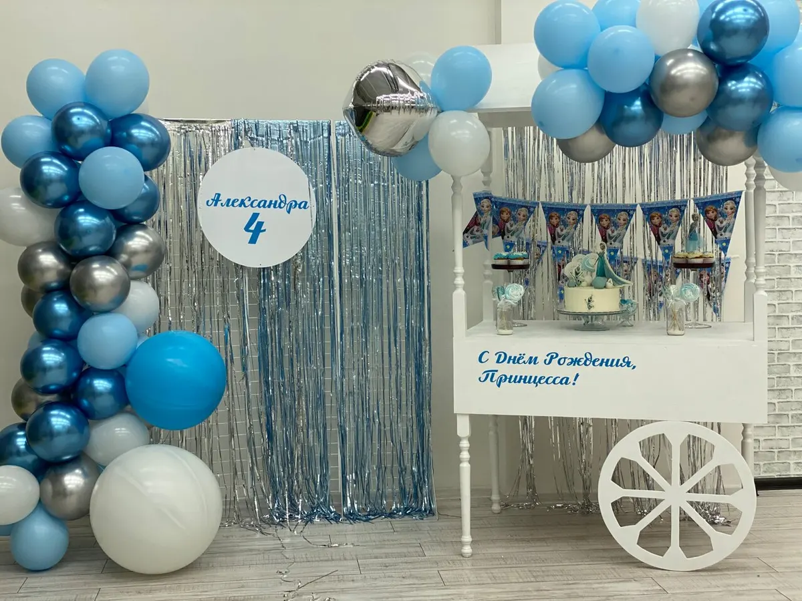
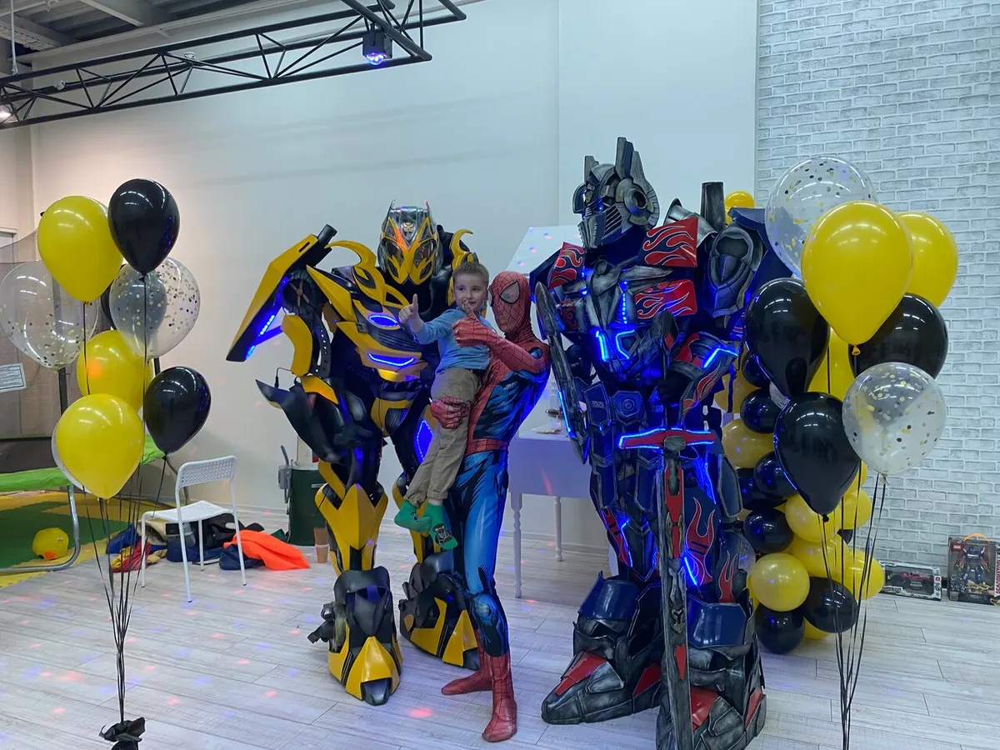
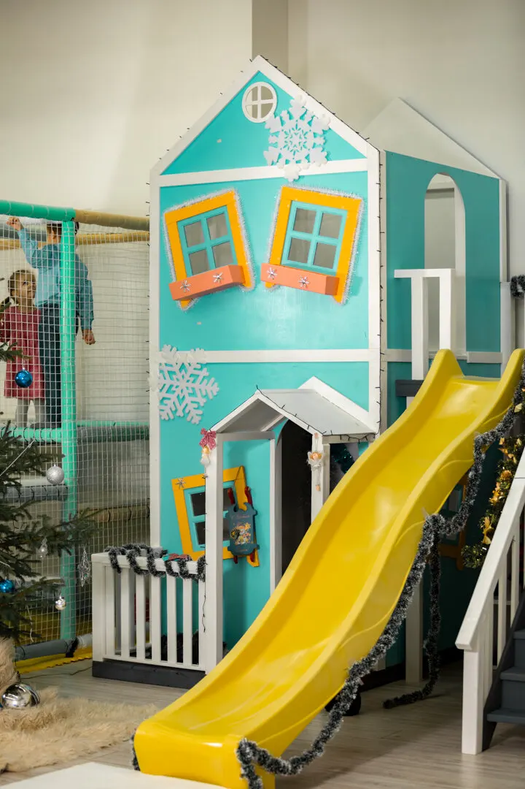
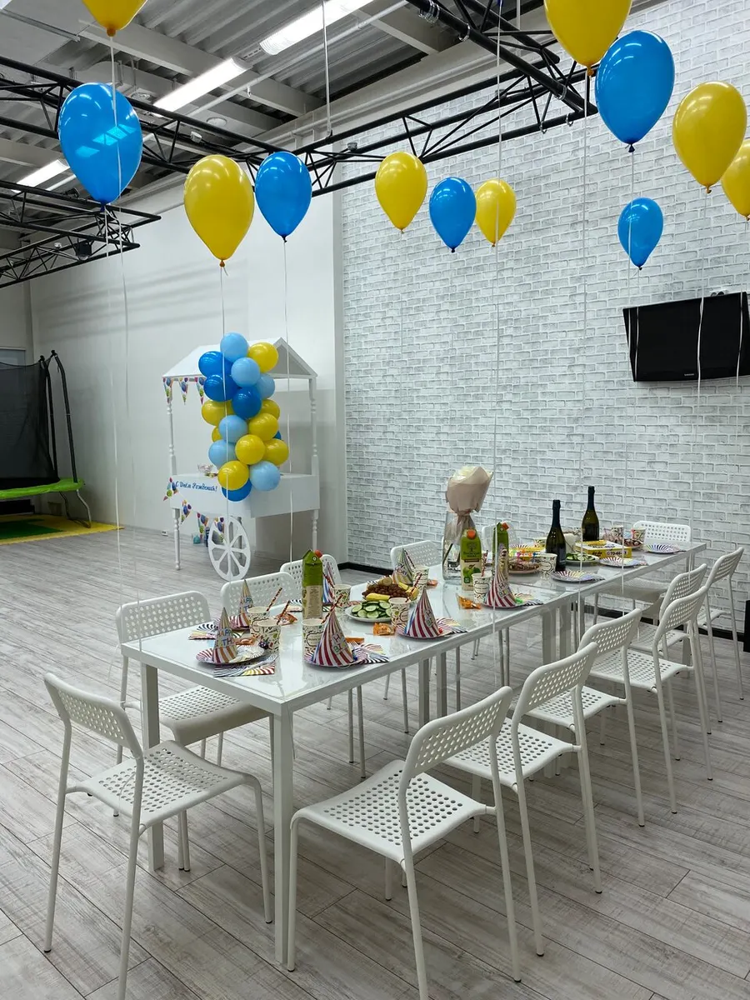

Лофт для детских праздников · Йошкар-Ола
Детский праздник в лофте в Йошкар-Оле: вы только приходите
Просторный зал, игровая зона с горкой и батутом, аниматоры и шоу. Лофт только для вашей компании.
- Лофт больше 135 кв.м, потолки выше 3 метров
- Горка, лабиринт и батут, пока нет анимации
- Аниматоры, шоу, квизы и мастер-классы

Что получает ваш праздник в Детском Арт-Лофте
Что в лофте
- Лофт больше 135 кв.м только для вашей компании
- Игровая зона: лабиринт, домик с горкой, батут
- Фуршетная зона со столом, кухней и посудой
- Уборка после каждого праздника
Программа и услуги на выбор
- Аниматоры, ростовые куклы и шоу
- Квиз, дискотека, мастер-класс
- Candy bar и фотозона
- Шары, аквагрим, фотограф, кейтеринг
Что можно заказать в детском лофте в Йошкар-Оле
Стоимость зависит от даты, числа гостей и программы. Цену на вашу дату называет администратор.
Лофт и праздник
- День рождения в лофтезал, игровая зона, фуршетная зона со столом и кухнейуточнить
- Аренда лофта для своего праздникатолько для вашей компании, без постороннихуточнить
- Праздник «под ключ»программа, оформление и угощение одним заказомуточнить
Программа
- Аниматоры и ростовые куклыгерои в костюмах, игры и конкурсыуточнить
- Шоу, квиз или дискотекасеребряное шоу, танцы с героями на экране, мыльные пузыриуточнить
- Мастер-класстворческая программа для детейуточнить
- Интерактивные аттракционыинтерактивный пол, ожившие рисунки, живая стена «Кидай-ка»уточнить
Оформление и угощение
- Candy bar и фотозонатележка со сладостями и фон Birthday Party с трономуточнить
- Оформление шарамиарки, гирлянды и фонтаны из шаровуточнить
- Аквагримрисунки на лице для именинника и гостейуточнить
- Услуги фотографасъёмка праздникауточнить
- Кейтерингугощение для детей и взрослыхуточнить
Для компаний
- Корпоративное мероприятиеформат и число гостей обсуждаем по телефонууточнить
Нужного нет в списке? Позвоните или напишите: +7 (964) 860-77-66.
Как забронировать лофт для детского праздника в Йошкар-Оле
- 01
Выберите дату и время
Напишите в WhatsApp или позвоните: +7 (964) 860-77-66. Назовите дату, сколько будет гостей и сколько лет детям.
- 02
Подберите программу
Аниматоры, шоу, квиз, мастер-класс или дискотека. Администратор подскажет, что подойдёт по возрасту.
- 03
Решите, что оформить
Candy bar, шары, фотозона, аквагрим, фотограф, кейтеринг. Берёте только то, что нужно.
- 04
Приходите на праздник
Кремлёвская, 19, пятый этаж, есть лифт. Остальное мы берём на себя. Оплата картой возможна.
Фото лофта, игровой зоны и героев Детского Арт-Лофта в Йошкар-Оле



Чем лофт запоминается
Лофт только для вашей компании
Сдаём зал на один праздник, посторонних гостей нет. После каждого праздника проводим тщательную уборку.
Детям есть чем заняться
Лабиринт, двухэтажный домик с горкой, батут и игрушки работают и тогда, когда у аниматора перерыв.
Приводим аниматоров и шоу
Весёлые аниматоры, ростовые куклы, серебряное шоу, танцы с героями на экране и мыльные пузыри.
Берём заботы на себя
Candy bar, фотозона, шары, аквагрим, фотограф и кейтеринг: родителям остаётся прийти и праздновать.
Отзывы о Детском Арт-Лофте в Йошкар-Оле
«В полном восторге от организации детского праздника! Ни о чем не нужно переживать. Задача родителей только придти. Остальное всё сделают за вас. Дети не хотели уходить!»
Лиза Ласточкина · 20 июня 2022
«Просторное помещение с высокими потолками, светлое, чистое, есть аттракционы для детей (лабиринт, 2-этажный дом с горкой, батут, игрушки). Сам праздник организован на высшем уровне: веселый аниматор (развлекал не только детей, но и взрослых).»
Evgenia Blokhina · 1 апреля 2026
«Компания друзей была разновозрастная, но все остались довольны и дети и взрослые. Шикарные аниматоры, дети были постоянно заняты, им не давали скучать. Помещение просторное, обстановка интересная и уютная.»
marina g. · 15 февраля 2024
Отзывы с карточки на Яндекс.Картах, без правок.
Частые вопросы о детском празднике в лофте в Йошкар-Оле
Сколько стоит праздник в лофте?
Стоимость зависит от даты, числа гостей и программы. Назовите дату и возраст детей, администратор посчитает в WhatsApp или по телефону +7 (964) 860-77-66.
Что есть в лофте?
Зал больше 135 кв.м с потолками выше 3 метров, большими окнами и кондиционером. Игровая зона: лабиринт, двухэтажный домик с горкой, батут, игрушки. Фуршетная зона со столом, кухней, кулером, чайником, микроволновкой и телевизором.
Будут ли в лофте посторонние?
Нет, сдаём лофт только под ваш праздник. После каждого праздника проводим тщательную уборку.
Какие программы вы проводите?
Аниматоры, шоу, квизы, дискотеки, мастер-классы и интерактивные аттракционы: интерактивный пол, ожившие рисунки, живая стена «Кидай-ка». Программу подберём под возраст гостей.
Можно ли заказать оформление и угощение?
Да: Candy bar и фотозона, оформление шарами, аквагрим, услуги фотографа и кейтеринг. Берёте только то, что нужно.
Проводите ли вы корпоративы?
Да, проводим корпоративные мероприятия. Формат, число гостей и цену обсудим по телефону.
Как вас найти и когда вы работаете?
Йошкар-Ола, Кремлёвская, 19, пятый этаж, есть лифт. Рядом парковка и остановка «Центральная» в 170 метрах. Работаем ежедневно с 10:00 до 22:00, праздники проводим по записи.
Назовите дату и возраст детей
- Адрес
- Кремлёвская ул., 19, 5 этаж, Йошкар-Ола
- Часы
- Ежедневно 10:00-22:00, праздники по записи
- Телефон
- +7 (964) 860-77-66